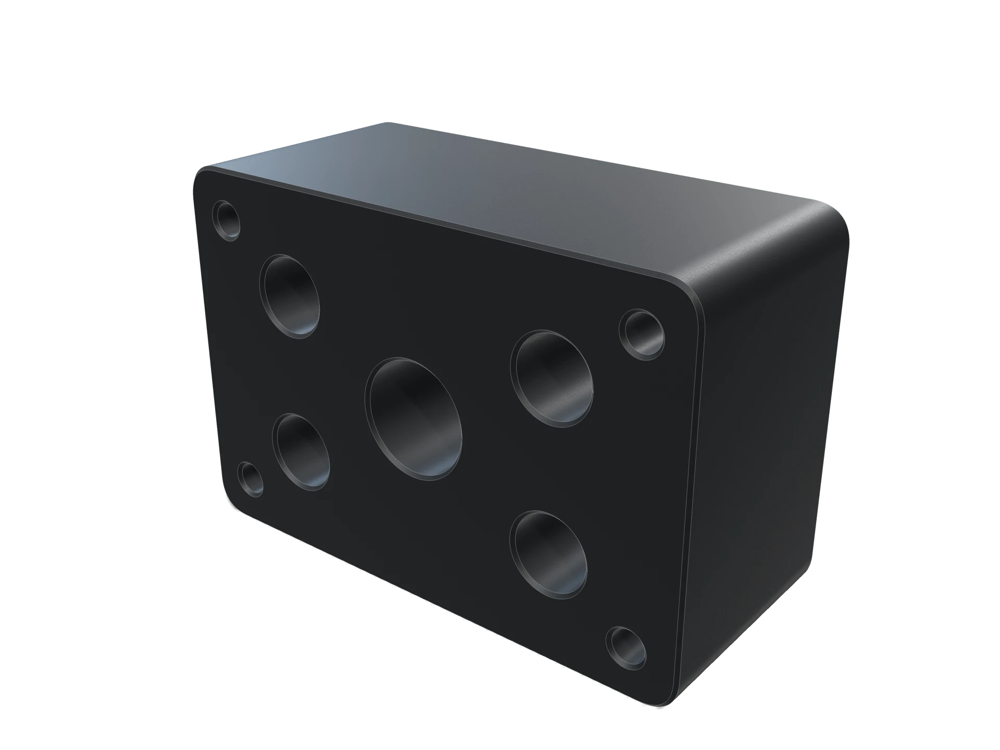
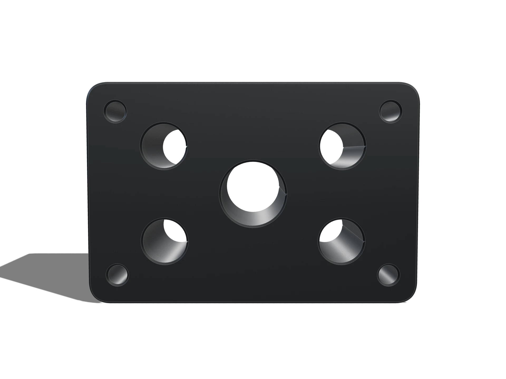
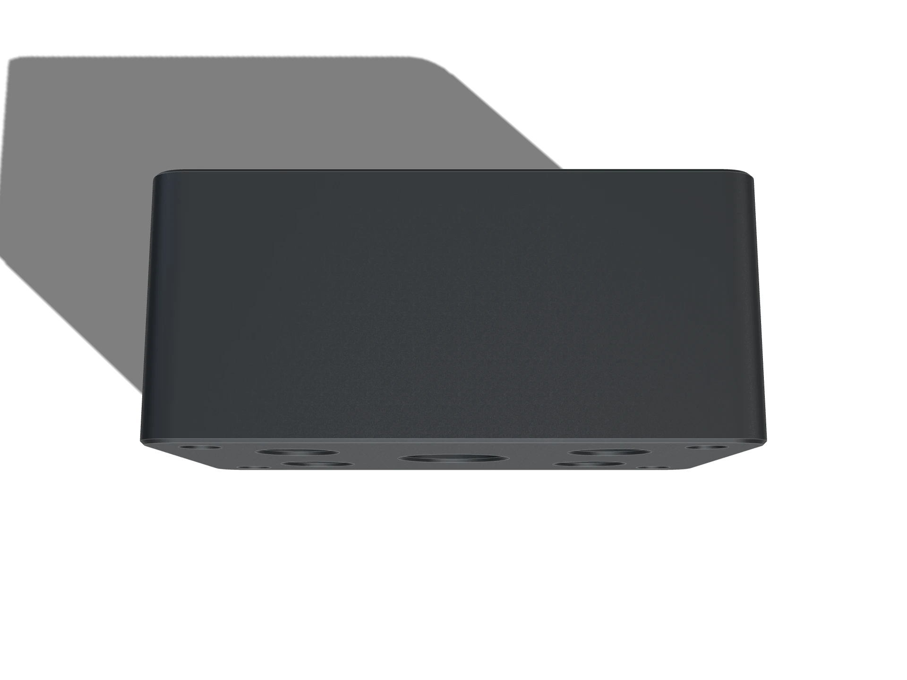

Four-port manifold block
A four-port hydraulic manifold laid out so every fitting can be reached with a standard spanner, which is less obvious than it sounds.
MN-0421 · 6061-T6 · 96 × 64 × 42 mm

Placeholder mesh. Christopher's export drops in here.
Finish
About this part
The galleries are cross-drilled and plugged, and the plugs sit on a face the assembly can still reach once the block is mounted.
Port spacing is set by the fitting hex across corners plus a spanner swing, not by the port thread. Three of the four ports moved outward in rev B for exactly that reason.
Hardcoat rather than clear anodize: the block lives in a wash-down area and the fittings come off often enough for the finish to matter.
| Material | 6061-T6 |
|---|---|
| Process | 3-axis mill, cross-drilled |
| Envelope | 96 × 64 × 42 mm |
| Mass | 892 g |
| Key tolerance | 210 bar working pressure |
| Mesh | 5 736 triangles · 280 KB |
| Finish | — |
| Roughness | — |
| Ports | 4 × G1/4, one G3/8 supply |
|---|---|
| Pressure | 210 bar working |
| Access | every fitting reachable with a 22 mm spanner, mounted |
| Finish | Type III hardcoat, 25 µm |
| Must not | come off the machine to service a port |
| Rev | Change | Why |
|---|---|---|
| Rev A | First issue | Ports on a tight square pattern |
| Rev B | Ports spread 8 mm | Spanner swing sets the pattern, not thread spacing |
| Rev C | Plugs moved to one face | Service access from a single side |
| Rev D | Released | Hardcoat thickness and plug torques called out |
Plates
Rendered from the same model, in the finish this part ships in.

